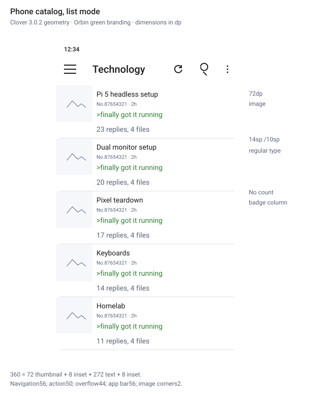
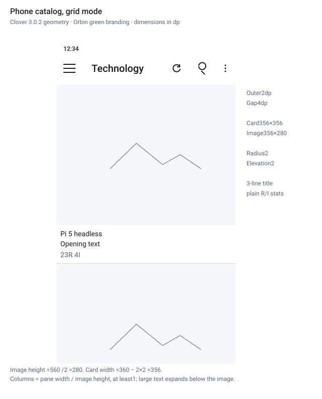
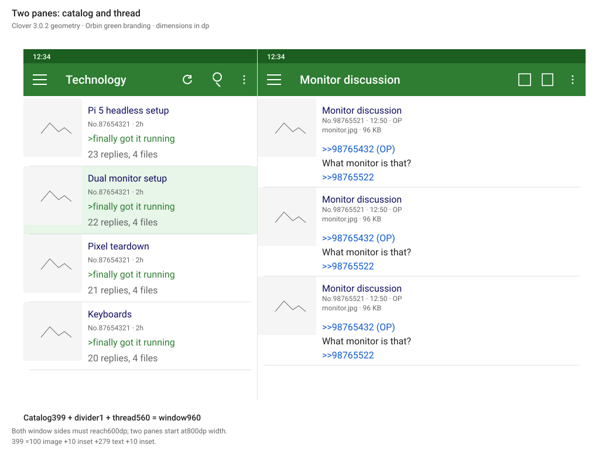
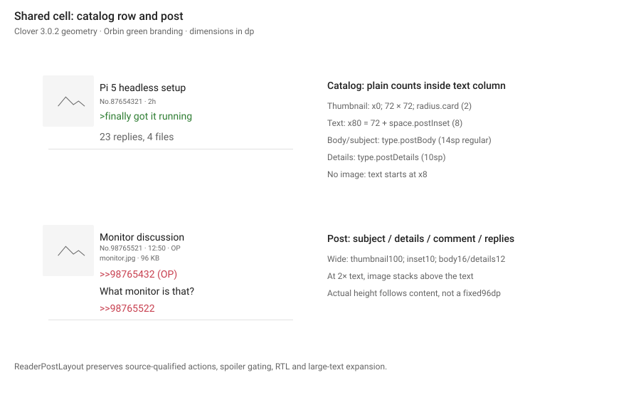
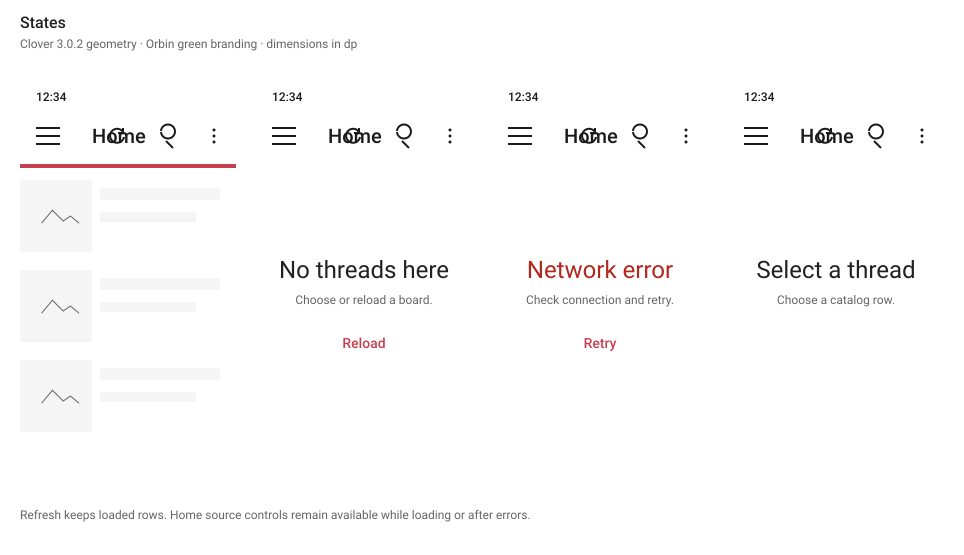
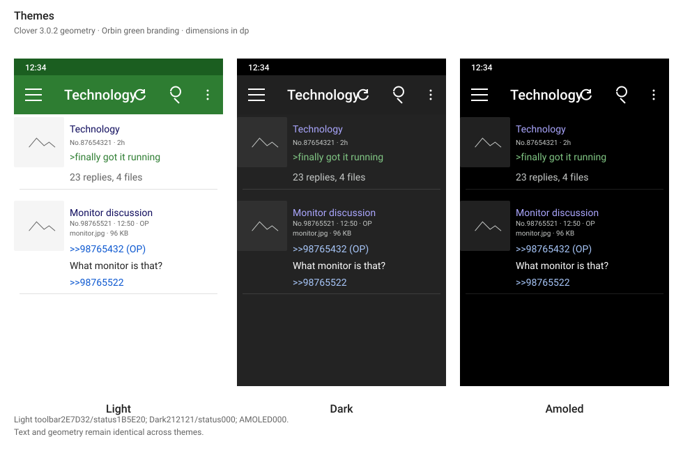

Sheet1 of 6
TitlePhone catalog, list mode
ReferenceClover 3.0.2
- 72dp thumbnails begin at the leading edge; text uses 8dp insets.
- Body and subject 14sp regular; details 10sp.
- Reply/file totals are plain text within the content column.
Clover 3.0.2 defines the compact reader geometry, controls and typography. Orbin retains its name, icon, green brand accent, subscriptions, source identities and media features.
The written spec in docs/design-system/README.md is the source of truth. If this page and the spec differ, the spec is correct.






Eight-digit labels use Android ARGB; swatches composite the same alpha. Color adaptations preserve Orbin branding and readable selected rows.
| Token | Light | Dark | AMOLED | Use |
|---|---|---|---|---|
color.appBar | #2E7D32 | #212121 | #000000 | App bar ground |
color.statusBar | #1B5E20 | #000000 | #000000 | Status bar ground |
color.onAppBar | #FFFFFF | #FFFFFF | #FFFFFF | App bar labels and icons |
color.background | #FFFFFF | #232323 | #000000 | Screen, row, post and card ground |
color.surfaceVariant | #F5F5F5 | #303030 | #212121 | Secondary ground, placeholders and skeletons |
color.selected | #E8F5E9 | #444444 | #444444 | Open row in two panes |
color.ink | #DE000000 | #FFFFFF | #FFFFFF | Primary body text |
color.inkSecondary | #89000000 | #B2FFFFFF | #B2FFFFFF | Generic secondary UI text |
color.inkMuted | #646464 | #C5C8C6 | #C5C8C6 | Post numbers, dates and attachment details |
color.hairline | #1E000000 | #1EFFFFFF | #1EFFFFFF | Decorative row and post dividers |
color.accent | #00796B | #80CBC4 | #80CBC4 | Orbin progress and actions |
color.onAccent | #FFFFFF | #003731 | #003731 | Text on an accent-filled control |
color.quote | #2E7D32 | #81C784 | #81C784 | Quoted lines |
color.author | #117743 | #81C784 | #81C784 | Post author name |
color.subject | #0F0C5D | #ABA7FF | #ABA7FF | Post and catalog subjects |
color.quoteLink | #0B57D0 | #A8C7FA | #A8C7FA | Post references and backlinks |
color.error | #B3261E | #F2B8B5 | #F2B8B5 | Error titles |
Bundled Roboto is shared on Android and iOS. Natural line height follows the verified font metrics. Legacy helper styles do not govern compact posts or catalog cells.
| Token | Size | Line height | Weight | Use |
|---|---|---|---|---|
type.appBarTitle | 20sp | 28sp | 500 | App bar title. |
type.appBarSubtitle | 14sp | 20sp | 400 | Board line under a thread title. |
type.rowTitle | 16sp | 22sp | 700 | Saved-record title; compatibility helper |
type.meta | 12sp | 16sp | 400 | Shared helper and saved-record metadata |
type.preview | 14sp | 20sp | 400 | Compatibility preview helper |
type.body | 15sp | 22sp | 400 | Compatibility body helper; posts use postBody |
type.cardTitle | 14sp | 20sp | 700 | Loading skeleton helper; cards use postBody |
type.postAuthor | 12sp | 16sp | 700 | Compatibility author helper |
type.postBody | 14sp | natural | 400 | Clover's default post size; natural Roboto metrics supply its line spacing. |
type.postBodyWide | 16sp | natural | 400 | The sw600dp post size from Clover's tablet resource configuration. |
type.postDetails | 10sp | natural | 400 | Post number, time and attachment metadata are four sp smaller than the body. |
type.postDetailsWide | 12sp | natural | 400 | Wide-window post metadata |
type.pill | 14sp | 20sp | 500 | Compatibility control helper; catalog counters are plain text |
type.stateTitle | 24sp | 32sp | 400 | Empty and error state title. |
type.stateBody | 16sp | 24sp | 400 | State helper text and the empty detail pane message. |
type.label | 14sp | 20sp | 500 | Text buttons. |
| Token | Value | Use |
|---|---|---|
space.gutter | 16dp | Left and right screen edge inset. |
space.rowPadY | 12dp | Legacy shared-cell and skeleton vertical padding |
space.postPadY | 12dp | Legacy shared-cell vertical padding |
space.postInset | 8dp | Clover post text inset: the configured text size minus six dp. |
space.postInsetWide | 10dp | Post text inset in wide windows |
space.albumPadding | 1dp | Clover's album container padding and individual cell margin. |
space.albumCellMargin | 1dp | Individual album cell margin |
space.cardPad | 8dp | Padding around the text block of a grid card. |
space.gridGap | 4dp | Between grid cards: the two adjacent 2dp card margins. |
space.gridOuter | 2dp | Outside margin of catalog grid cards, matching Clover v3.0.2 on API 21+. |
space.gap | 12dp | Reply nesting and generic control spacing |
space.gapSmall | 8dp | Generic block and drawer padding |
space.line | 4dp | Between title, meta line, and preview in a row. |
| Token | Value | Use |
|---|---|---|
size.appBar | 56dp | App bar height. |
size.appBarNavigation | 56dp | Clover toolbar leading navigation control width. |
size.appBarAction | 50dp | Clover toolbar regular action width. |
size.appBarOverflow | 44dp | Clover toolbar overflow control width. |
size.touchTarget | 48dp | Minimum size of anything that can be tapped. |
size.icon | 24dp | App bar icon. |
size.thumbnail | 72dp | Cell thumbnail width and height in a window that is not wide. |
size.thumbnailWide | 100dp | Cell thumbnail width and height in a wide window. |
size.cellMin | 96dp | Legacy shared-cell and loading minimum |
size.cellMinWide | 124dp | Legacy shared-cell and loading minimum, wide |
size.gridCardMin | 120dp | Grid column count is the pane width divided by this, rounded down. |
size.gridCardText | 76dp | Compatibility value; active card height comes from ratio.gridCard |
size.cardElevation | 2dp | Catalog card elevation, matching Clover v3.0.2. |
size.threadStatus | 88dp | Thread footer that reports reply and image counts. |
size.albumDetails | 32dp | The album cell adds this metadata strip to its width to determine its height. |
size.pillHeight | 36dp | Compatibility control height; no catalog count pill |
size.pillMinWidth | 48dp | Compatibility control and skeleton width |
size.hairline | 1dp | Row and post divider thickness. |
size.progress | 4dp | Refresh progress bar height. |
size.readingMax | 640dp | Maximum post text width in a wide pane. |
size.drawerMax | 336dp | Maximum navigation drawer width. |
size.wideMin | 600dp | Both window sides must reach this to count as wide. |
size.twoPaneMinWidth | 800dp | Wide windows at least this wide show two panes. |
size.listPaneMax | 420dp | Maximum catalog pane width in two panes. |
size.paneDivider | 1dp | Divider between the two panes. |
| Token | Value | Use |
|---|---|---|
radius.small | 4dp | Generic skeleton/helper corners; reader thumbnails use radius.card |
radius.card | 2dp | Grid card. |
radius.pill | 18dp | Compatibility control radius; no catalog count pill |
| Token | Value | Use |
|---|---|---|
ratio.gridCard | 0.5 | Card width / minimum height (9:18) |
ratio.gridThumbnail | 1.230769 | Image width / height (16:13; exact fraction in code) |
| Pane width | Columns | Card width |
|---|---|---|
| 360dp | 3 | 116dp |
| 399dp | 3 | 129dp |
| 420dp | 3 | 136dp |
| 600dp | 5 | 116dp |
| Window width | Catalog pane | Divider | Thread pane |
|---|---|---|---|
| 800dp | 332dp | 1dp | 467dp |
| 960dp | 399dp | 1dp | 560dp |
| 1280dp | 420dp | 1dp | 859dp |